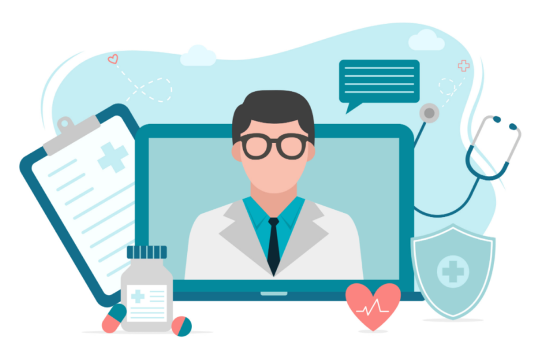

Saúde Digital
Sua fonte confiável de informações sobre saúde e bem-estar. Explore conteúdos ricos e detalhados para manter-se informado sobre as melhores práticas de saúde, dicas de bem-estar e as últimas inovações na área da saúde digital.
Visite nosso BlogArtigos
Explore uma vasta gama de artigos escritos por especialistas em saúde, abordando temas relevantes e atualizados para manter você informado e saudável. Nossos artigos são revisados por profissionais qualificados para garantir a precisão das informações, cobrindo tópicos como nutrição, exercícios físicos, saúde mental e muito mais. Além disso, oferecemos estudos de caso e pesquisas recentes para aprofundar seu conhecimento.
Dicas de Bem-estar
Descubra dicas práticas para melhorar sua qualidade de vida, desde alimentação balanceada e exercícios físicos até técnicas de relaxamento e gestão do estresse. Nossas dicas são elaboradas por especialistas e são baseadas em evidências científicas para ajudar você a viver uma vida mais saudável e equilibrada. Aprenda como incorporar pequenas mudanças no seu dia a dia que podem fazer uma grande diferença na sua saúde e bem-estar.
Consultas Online
Agende consultas com profissionais de saúde qualificados sem sair de casa, garantindo atendimento rápido e conveniente para todas as suas necessidades de saúde. Oferecemos uma plataforma segura e fácil de usar, onde você pode consultar médicos, psicólogos, nutricionistas e outros especialistas. Nossos serviços de telemedicina são ideais para quem busca comodidade e eficiência, especialmente em tempos de pandemia.